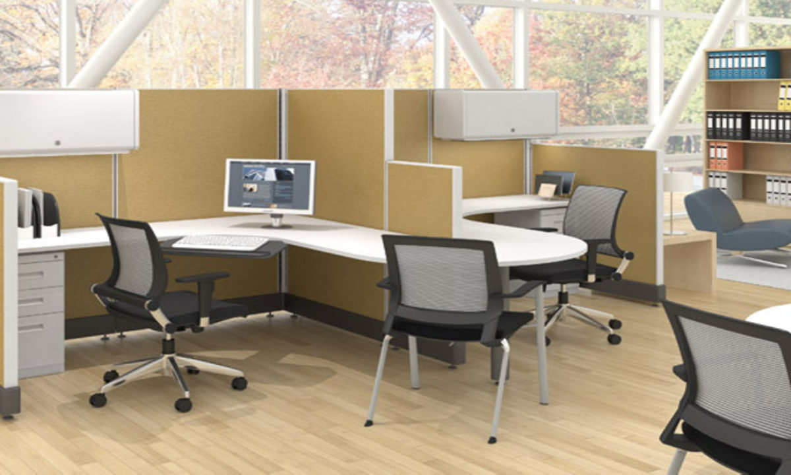
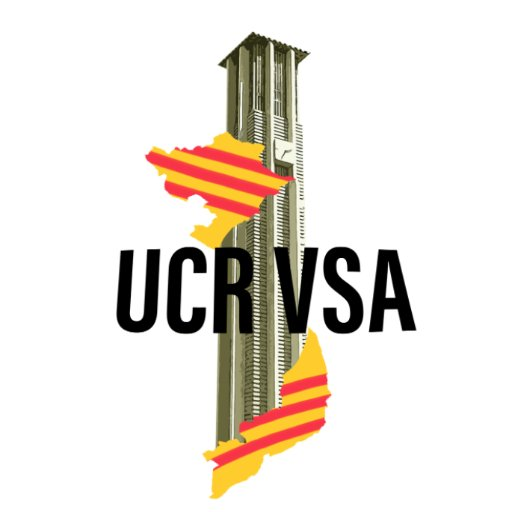
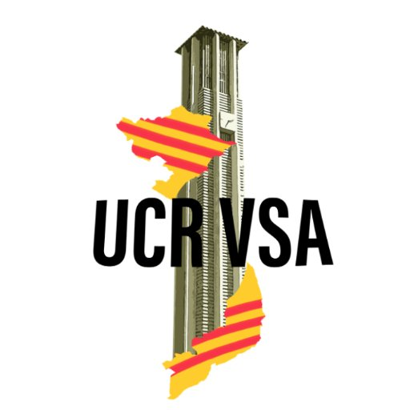

Kelly Chan
Hello! I am a 19 year old Chinese Vietnamese American, who was born in the San Gabriel Valley. I then moved to Pomona Valley, which is where I spent the rest of my childhood. I graduated from Diamond Bar High School and am now a second year student at the University of California, Riverside. I am a pre-health student studying biochemistry with a medical emphasis. I am involved in a sorority called Alpha Delta Pi, as well as a cultural organization on campus called Vietnamese Student Association. My sorority’s philanthropy is the Ronald McDonald House of Charities. We have a local house in Loma Linda, and my sisters and I often visit to help bake and cook for these families, clean up for them, and just overall spend time with them. This year, I picked up two little diamonds. As their big, I am their ADPi mentor, older sister, and best friend all in one! Alpha Delta Pi until I die
Vietnamese Student Association is the largest organization on our campus. Our members do not have to be Vietnamese to join, however, we do focus and celebrate Vietnamese culture. We have an event called ACE week, where new members can find an “An” or “Chi” which means older brother or older sister. This event promotes our club’s aspect of family. We also have an event called Vietnamese Culture Night, where we perform Vietnamese skits, songs, and even dances. I am actually VSA’s Social Chair this year, and last year I was one of nineteen VSA’s interns. As their Social Chair, I am in charge of organizing fundraising events, clubbing events, and our winter and spring retreats. Due to COVID-19, clubbing events and our retreats have unfortunately been cancelled
As for my career, the medical field has always been something I wanted to pursue, however I get queasy at the thought of needles and blood. Therefore, I began looking into other medical careers that are not doctors or surgeons. Pharmacy was the one that stuck with me after all these years. So ever since my sophomore year of high school, I have always wanted to be a pharmacist. As an aspiring pharmacist, I am currently working at Walgreens pharmacy to gain the hours and experience required to take the PTCB. Passing the PTCB allows me to officially work as a Pharmacy Technician! Once I graduate from UC Riverside, I plan on going to pharmacy school to further my education! Some schools I have looked into include Western University, in Pomona, and Chapman, located in Orange.
Experience
Designated Hitter
• Is my store's go-to person for all store operations
• Work on the store floor as well as in the pharmacy
Data Entry Clerk & Import Coordinator
• Created and organized both physical and electronic files & documents
• Updated databases by inputting new information about consignees, shippers, & more.
• Worked closely with oversea agents to ensure our customers' orders were placed and received on time
Social Chair & Intern
• I, alongside 18 other interns, was able to represent the general members of our organization
• Organized and hosted events as an intern
• As a Social Chair, I organize fundraising events and retreats.
Education
UC Riverside
University of California Riverside
University of California Riverside
Portfolio



